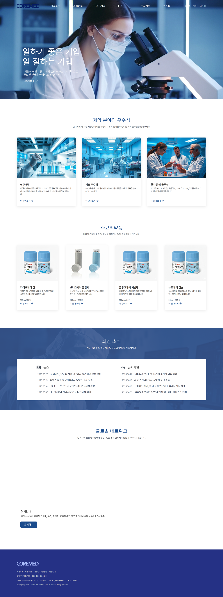
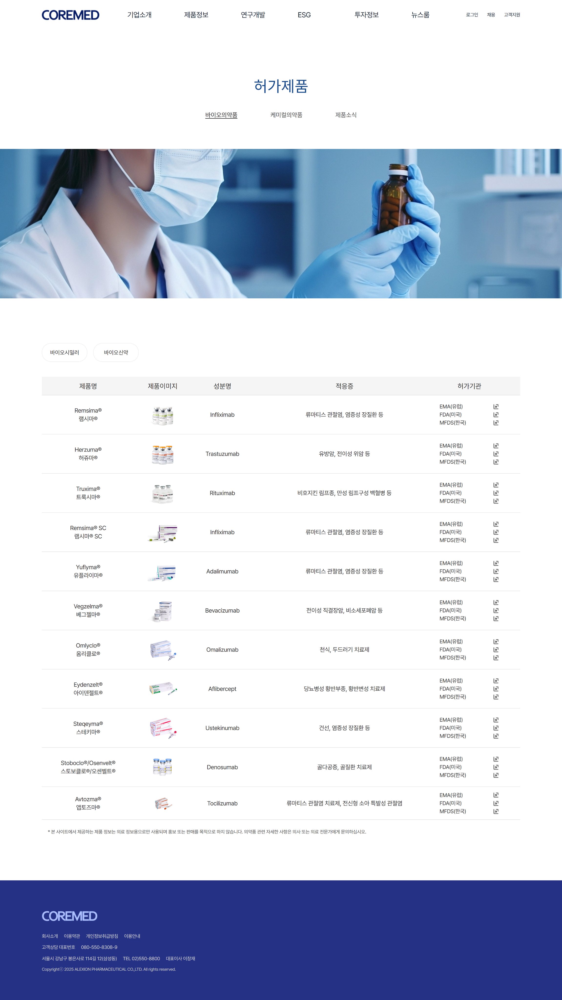
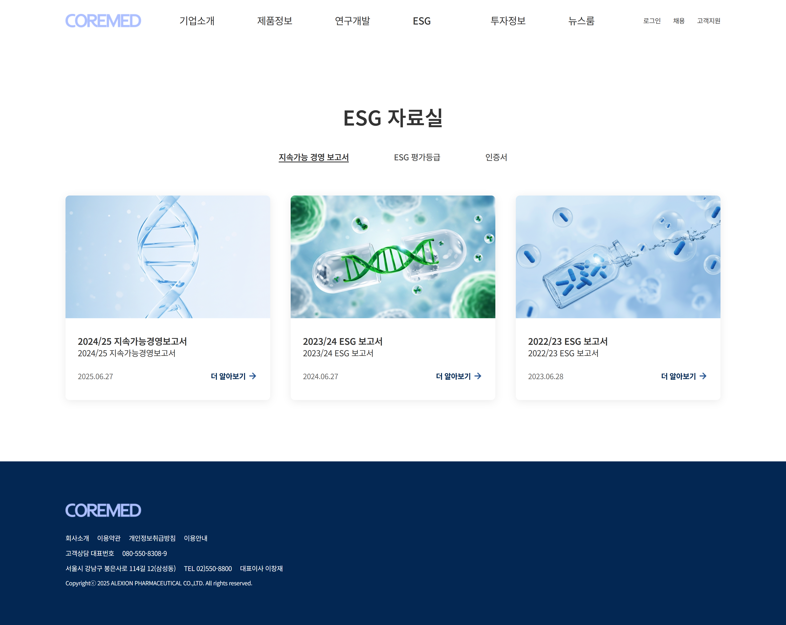

Project Workflow
01
Requirements & Research
- 제약회사 웹사이트 특성 분석
- 타겟 사용자 정의 (의료진, 환자, 투자자)
- 경쟁사 벤치마킹 및 차별화 포인트 도출
- 의료업계 규정 및 가이드라인 검토
02
Information Architecture
- 사이트 구조 설계 (기업소개, 제품정보, 연구개발, ESG)
- 콘텐츠 우선순위 정의
- 사용자 플로우 설계
- 핵심 정보 접근성 강화 전략 수립
03
Visual Design
- 블루 컬러 기반 브랜드 아이덴티티 구축
- 전문성과 신뢰성을 강조하는 UI 디자인
- 와이어프레임 및 프로토타입 제작 (Figma)
- 반응형 디자인 가이드 작성
04
Development
- HTML/CSS/JavaScript 구현
- jQuery 기반 인터랙션 개발
- Intersection Observer API를 활용한 스크롤 애니메이션
- 반응형 웹 구축
05
Content Integration
- 제품 정보 데이터베이스 구축
- 실제 의약품 정보 및 이미지 최적화
- ESG 콘텐츠 및 자료실 구성
- Google Maps API 연동
06
Testing & Launch
- 크로스 브라우징 테스트
- 접근성 검증 (WCAG 2.1 기준)
- 성능 최적화 (이미지 압축, 레이지 로딩)
- 최종 배포 및 GitHub Pages 호스팅


